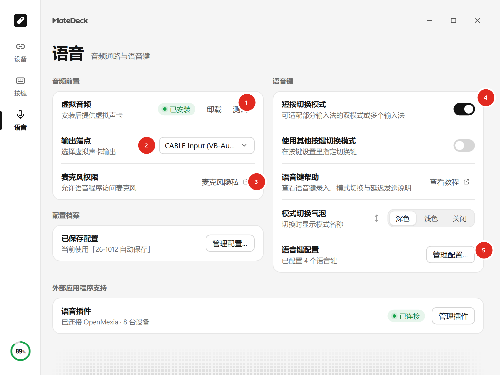

语音输入¶
把遥控器声音送进搜狗、微信、豆包、Chatterfly 这类带语音快捷键的输入法，需要一条四段链路： 遥控器话筒 → MoteDeck → 虚拟声卡 → 输入法麦克风。

图中标号：① 虚拟音频（安装／卸载／测试） ② 输出端点 ③ 麦克风权限 ④ 语音键（短按切换模式） ⑤ 语音键配置（录音增益）
整条链路里只有两处需要你亲手选：MoteDeck 的「输出端点」选 CABLE Input，输入法的麦克风选 CABLE Output。
1. 安装虚拟音频¶
- 打开「语音」页，点「安装音频」。
- 按提示完成 VB-CABLE 安装，然后重启电脑。
2. 选对两个端点¶
| 位置 | 应该选 |
|---|---|
| MoteDeck「输出端点」 | CABLE Input — Windows WASAPI（没有 WASAPI 时选 Windows DirectSound） |
| 输入法「麦克风」 | CABLE Output |
方向不能反
CABLE Input 是 MoteDeck 写入声音的一侧，CABLE Output 是输入法读取麦克风的一侧。
两边选反或选成同一个端点，都会出现「有声音但没文字」。不要选择 Windows WDM-KS。
3. 对齐语音快捷键¶
- 在 MoteDeck 里选择语音程序，刷新或手动录入该输入法的语音快捷键。
- 先在记事本里用电脑键盘按一次这个快捷键，确认输入法能正常开麦并出字。
- 保持光标在输入框里，再用遥控器话筒键测试。
各输入法的差异：
- 搜狗、豆包、Chatterfly：进入语音页、切换设备或切换录音模式时会自动重新读取快捷键。 保存过的手动值需要点「刷新」才会被替换；当前正忙时会等空闲后补读。
- Chatterfly：使用其设置中的「语音输入」快捷键，首次选择不会继承其它输入法的快捷键； 它的快捷键可以从用户配置自动读取。Chatterfly 走的是它自己的录音开始／结束入口， 已有录音时不会重复开启。
- 微信：仍需要你主动点「刷新」，程序不会自动打开微信设置窗口。
请避开 Windows 和其它软件已经占用的组合键。
4. 每条语音键的录音增益¶
每条语音键可以单独设置增益：
- 自动（默认）：按这一段录音的峰值归一化，滑块不生效。
- 手动：关掉「自动」后按 −3 ~ +3 共七档调整，每档 6 dB，0 为不调整。
按住型录音的行为¶
小米遥控器是按住型：按住说话，松开结束。
- 使用快捷键的按住型录音期间，语音快捷键会一直保持按下，松开话筒键才释放。 这期间不要同时操作其它按键或鼠标，避免按键冲突。
- 语音键可以放到遥控器任意按键上，但只有实体话筒键被按住时遥控器才送出音频， 其它按键只会发出开始控制的信号。
- 遥控器没有「松开」通知，程序按音频停止事件判断松手。
语音键列表¶
语音页里的语音键是可增删的列表：
- 支持重命名（最多 32 字）、上下移动、逐条启停和删除。
- 前两条会同步到旧的
voice_slot_hotkeys字段，保持兼容。 - 停用的键会保留在列表和配置档案里，不会丢失快捷键设置。
- 新建语音键一律接在当前最大编号之后，不会复用空出来的编号。
由插件带来的语音键带插件标记，快捷键映射锁定、不能删除；断开插件时统一清理这些键。
插件语音键的短按与长按¶
装好 Vokie 插件后，插件语音键的判定规则：
- 长按（约 0.25 秒）才开启插件会话，按下期间保留 0.8 秒环形预录缓冲，开会话后一并补发，开口第一个字不丢。
- 短按只切换到下一条语音模式，并弹出模式气泡，不唤起 Vokie。
常见问题¶
- 输入法有气泡没声音 → 检查两个端点是否选对。
- 遥控器按语音键没反应 → 先用实体键盘测试同一个快捷键，再回来看 MoteDeck 保存的快捷键是否一致。
更多见常见问题。